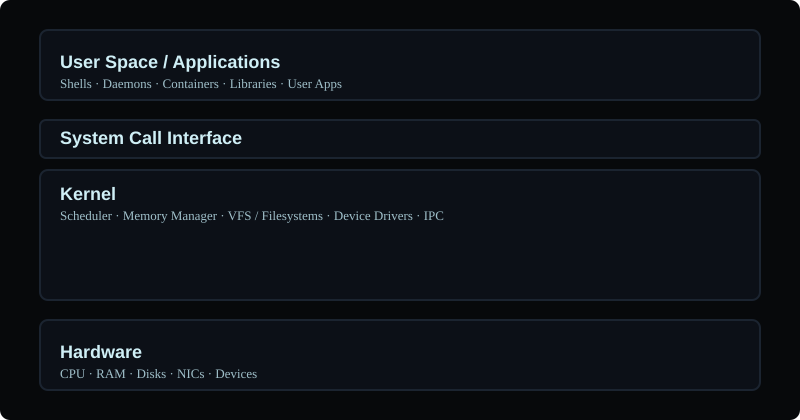

Operating Systems — From Basics to Advanced
A structured OS learning path derived from recommended video resources, with diagrams, examples, and exercises.
Quick Orientation
An operating system (OS) is system software that manages hardware resources, provides services to user applications, and exposes interfaces (system calls) for programs to interact with devices and other processes.
This section is organized: Fundamentals → Core Components → Concurrency & Memory → Filesystems & I/O → Advanced Kernel Topics → Virtualization, Containers & Performance.
OS Architecture (ASCII)
+-------------------------------------------------------------+
| User Space / Applications |
| Shells, GUIs, Daemons, Containers, User Apps, Libraries |
+-------------------------------------------------------------+
| System Call Interface |
+-------------------------------------------------------------+
| Kernel |
| - Process scheduler - Memory manager - VFS/File system |
| - Device drivers - IPC & networking - Security |
+-------------------------------------------------------------+
| Hardware |
| CPU(s), Memory (RAM), Disks, NICs, Devices |
+-------------------------------------------------------------+
Below is a simple visual (SVG) diagram that highlights logical layers.

Processes & Scheduling
Process = executing program instance (PID, memory space, file descriptors). The kernel creates processes via fork/exec and schedules them on CPUs using a scheduler (CFS on Linux).
Key concepts: process states (running, ready, blocked), context switch, preemption, priorities, scheduling fairness, and real-time vs. timesharing policies.
CPU Scheduling Algorithms
Common algorithms: First-Come-First-Serve (FCFS), Shortest-Job-First (SJF), Round-Robin (RR), Priority scheduling, Multilevel Feedback Queues. Understand metrics: throughput, turnaround, waiting, response time.
Beginner
Commands: ps aux, top, htop. Create a process with sleep 60 &. Kill with kill PID.
Advanced
Understand scheduler internals (load balancing, runqueues), cgroups influence on CPU shares, and tuning priorities with nice/renice. Learn how kernel chooses which task to run next and how affinity and NUMA affect performance.
Memory Management
The kernel manages physical RAM and provides virtual memory to processes using page tables and MMU. Virtual memory isolates processes and allows paging and swapping.
Beginner
Concepts: virtual address space, stack vs heap, page size. Inspect with free -h, vmstat, /proc/meminfo.
Intermediate
Paging, demand paging, TLB caching, page faults. Understand how the kernel handles page faults and when swapping happens.
Advanced
Kernel memory allocators (slab, SLUB), hugepages, NUMA allocations, memory overcommit policies, and tuning swappiness. Use numastat, perf, and pmap for diagnosis.
Concurrency, IPC & Synchronization
Processes and threads need to coordinate and share data safely. The kernel provides mechanisms: signals, pipes, sockets, shared memory, message queues, semaphores, futexes.
Beginner
Signals (kill -s SIGTERM), pipes (|), named pipes (mkfifo), sockets with simple client/server programs.
Advanced
Deadlocks
Deadlock conditions: mutual exclusion, hold and wait, no preemption, circular wait. Strategies: prevention, avoidance (Banker's algorithm), detection and recovery.
Race conditions, atomic operations, lock-free algorithms, deadlock detection/prevention, futexes used by pthreads, and kernel-level synchronization primitives. Learn to use tools like strace, perf, and race detectors.
Virtual Memory & Storage
This covers virtual memory concepts (paging, swap) and storage interaction; filesystems & block I/O behaviors are discussed below.
Filesystems & I/O
File systems translate file operations to block device operations. Linux VFS provides a uniform API; actual drivers (ext4, xfs, btrfs) implement storage behavior.
Beginner
Common commands: df -h, du -sh, mount, umount, examine /proc/partitions.
Advanced
Journaling, copy-on-write FS (btrfs), GC and balancing, latency vs throughput tradeoffs, I/O schedulers (mq-deadline, bfq), direct I/O, and O_DIRECT. Use iostat, fio, and blktrace to profile I/O.
System Calls, Kernel APIs & Drivers
System calls are the gateway to kernel services. Drivers run in kernel space and interact with hardware via defined interfaces.
Beginner
Observe syscalls with strace. Familiarize with open, read, write, ioctl, mmap.
Advanced
Writing kernel modules, character vs block drivers, device trees, IRQ handling, and safe API use. Use dmesg, /sys, and kernel logs for debugging.
Boot, Init & Services
Boot process: firmware/UEFI → bootloader (GRUB) → kernel → init/systemd → user services. Understand runlevels, units, targets, and service dependency ordering.
Hands-on
Inspect units with systemctl status, analyze logs with journalctl -b, and create simple systemd service units.
Security & Permissions
POSIX permissions, ACLs, capabilities, SELinux/AppArmor, namespaces, and seccomp for sandboxing. Understand the principle of least privilege and how to apply it.
Virtualization & Containers
Hypervisors (KVM) virtualize hardware; containers share the host kernel using namespaces and cgroups. Differences: isolation level, performance, and resource management.
Advanced
Dive into kernel namespaces, cgroups v2, overlay filesystems, and container runtime internals (runc, containerd). Learn how containers are an OS-level virtualization technique.
Performance, Debugging & Tracing
Tools: top, htop, perf, strace, ltrace, ftrace, bpftrace, and eBPF for advanced tracing.
Use perf to find CPU hotspots, and eBPF for dynamic kernel tracing without recompiling the kernel.
Exercises & Further Reading
- Implement a simple producer/consumer using POSIX threads and test race conditions.
- Trace startup with
systemd-analyze blameand optimize a slow service. - Use
perf record+perf reportto analyze a CPU-bound program. - Explore container isolation by building a small rootfs and running it with
chrootvs. a container.